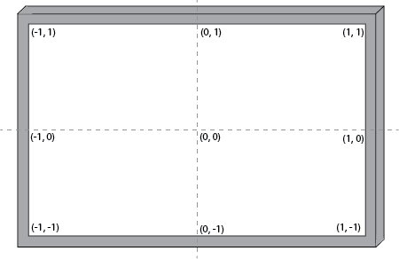

Drawing Region
The drawing views define which region of visual space is used for the visual world as well as the units for the parameters (sizes/locations) that stimuli are drawn with.
Note
This can be larger than the actual region used.
All drawing views accept a RenderFrame as input and a DrawX stimuli as output as shown in the basic workflow below.
2D Stimuli
NormalizedView
NormalizedView is the default view for rapid prototyping of 2D stimuli.
This view scales the screen from -1 to 1 on both axes and has no properties to adjust.
Stimuli drawn will have parameters (eg, sizes, locations) in terms of proportions of the screen size, in contrast to OrthographicView.

In this example workflow, we have drawn a circle with a diameter of 1. Since the screen size is scaled from -1 to 1 on both axes, that results in a circle that takes up half the screen in both axes.
OrthographicView
OrthographicView is the preferred view for displaying 2D stimuli with traditional retino-centric coordinates.
The properties to vary are the visual angles for the top and bottom boundaries (elevation) and left and right boundaries (azimuth).
Stimuli drawn will have sizes and locations defined in terms of visual angles.
In this example workflow, we have defined an orthographic view that extends 90 deg in visual angle for all 4 boundaries (essentially a hemisphere in front of the subject) and defined a circle to be drawn with a diameter of 90 degrees centered at 0 deg visual angle. This leads to a circle that takes up half the visual field. Although the outcome is the same with both the NormalizedView and OrthographicView examples note the differences in terms of units that the stimuli are drawn with.
3D Stimuli
PerspectiveView
PerspectiveView is the preferred view for displaying 3D stimuli such as 3D models or scenes (complex 3D models).
The properties to vary are the eye/camera position, field of view, light position, target position, the up vector of the camera (this determines the roll/orientation) as well as the distance to the far and near clipping planes (the area that the camera can see).
Stimuli drawn will have sizes and locations defined in terms of metric units.
Warning
Using a 2D DrawX stimuli node with a PerspectiveView will throw a method overload error.
In this example workflow, we have replaced the 2D draw circle with a 3D DrawModel node to draw a 3D plane.
CubemapView
CubemapView is the preferred view for display 3D environments such as those commonly used for virtual reality or augmented reality.
The properties to vary are the eye/camera position, light position, field of view, target position, as well as the distance to the far and near clipping planes (the area that the camera can see).
Stimuli drawn will have sizes and locations defined in terms of metric units.
In this example workflow, we use CubemapView to simulate the walls of a virtual 3D room. This example workflow is a stripped down version of the virtual reality corridor in Demos and requires downloading of the textures in that article.
Note
CubemapView requires two additional nodes for a basic workflow, a RenderCubemap operator from the Bonsai.Shaders package (included as a dependency) that renders the cubemap and a ViewWindow that looks out into the virtual environment.
Note
While the description of the operator suggests that you need to define six textures for each face of the cubemap, you can display an arbitary number of textures (including less than six).
Other nodes to document (under construction)
HMDview and RenderHMD